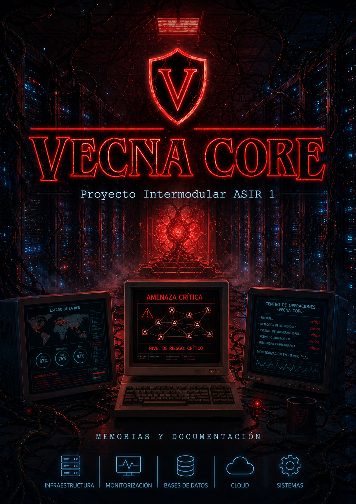

Estudiante de ASIR & Ciberseguridad
Ingeniería,
Ingeniería,
Seguridad y Resiliencia.
Portfolio profesional personal de Pedro Hosannah Navas. Presento mi perfil académico y profesional de forma organizada, con enfoque en administración de sistemas, ciberseguridad, automatización y mejora continua. También incluyo VECNA CORE, mi TFG/proyecto intermodular de 1º de ASIR.
Resumen del portfolio
Perfil académico y profesional
Soy un perfil IT junior con base en Madrid, raíces en Brasil y una orientación clara hacia la ciberseguridad. Actualmente estudio ASIR y Ciberseguridad en Centro Prometeo by The Power, con interés en redes, administración de servidores Linux/Windows, virtualización y protección de infraestructuras.
Proyecto principal: VECNA CORE

TFG / Proyecto Intermodular ASIR 1
Infraestructura empresarial orientada a ciberseguridad
VECNA CORE es una propuesta completa de empresa tecnológica centrada en administración de sistemas, redes, servicios internos, base de datos, nube y seguridad. El proyecto integra Windows Server, segmentación por VLANs, servicios como AD DS, DNS, DHCP, FTP y WEB, además de una documentación organizada por módulos.
Apartados incluidos
Especialidades
Defensa activa
Hardening de servidores, revisión de configuraciones y auditoría continua para prevenir brechas antes de que ocurran.
Infraestructura
Despliegue de servicios, virtualización, contenedores y arquitecturas orientadas a disponibilidad y mantenimiento.
DevSecOps
Integración de seguridad en procesos técnicos mediante automatización, documentación y control de cambios.
Auditoría & pentesting
Análisis de vulnerabilidades, simulación de amenazas y aprendizaje continuo en entornos controlados.